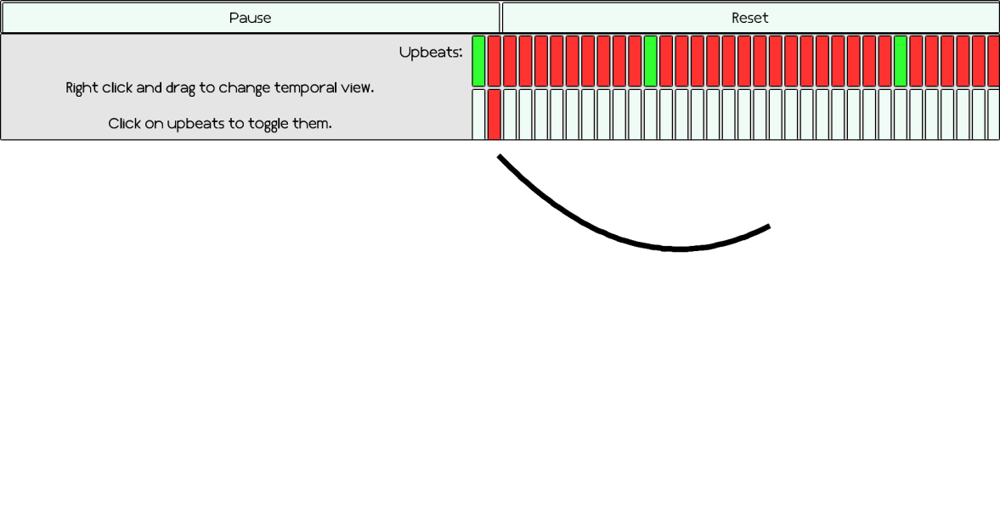

Bryce
Musical Pendulum Project

The musical pendulum project is an attempt to visualize the space between beats in the performance of music. I have created this project in collaboration with Professor Stephen Neely.
Video1
,
Video2